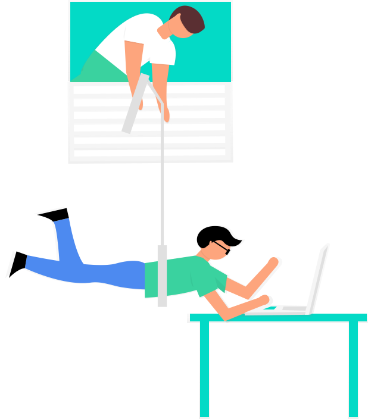
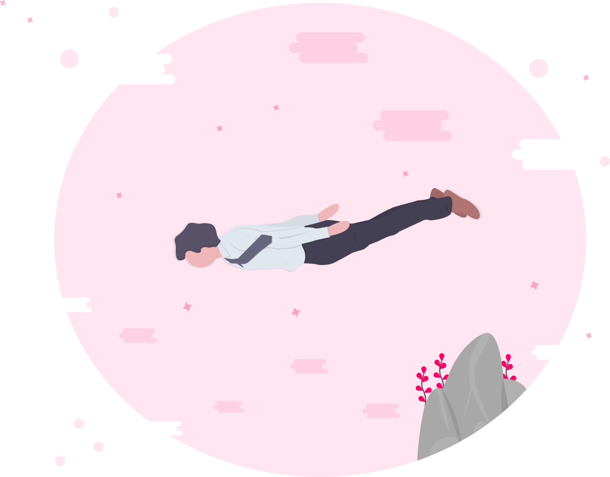
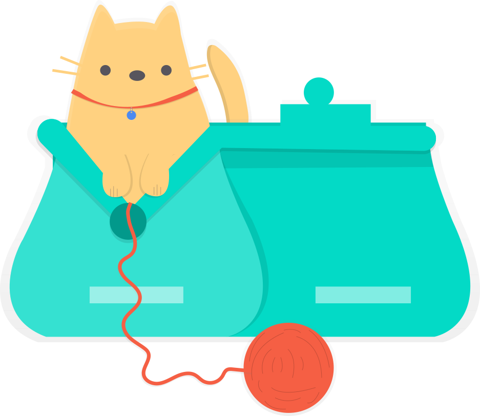
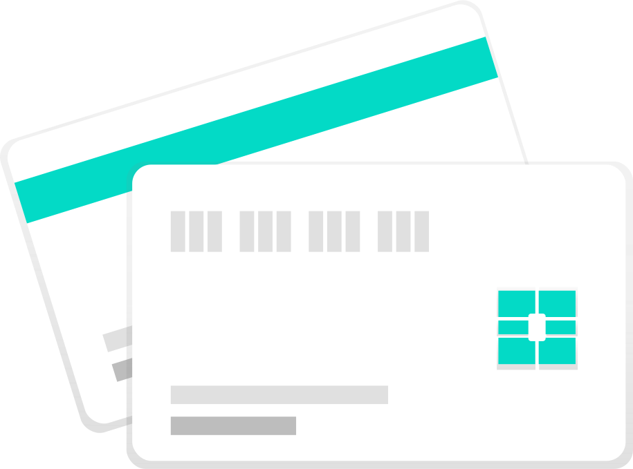

# En variants håndbok
Her forsøker vi å beskrive hvordan ting gjøres i Variant, hva vi prøver å oppnå og hvorfor vi tenker som vi gjør. Denne er både for ansatte og folk som er nysgjerrige på hvordan det er å være en variant. Håndboka er et levende dokument som vi ønsker alle ansatte skal ha eierskap til. Vi oppfordrer alle til å endre eller legge til innhold i den. Håndboken ligger åpent på GitHub hvor alle kan sende inn endringer eller stille spørsmål.
Om du ikke er en variant men liker det du leser, ta en titt på ledige stillinger hos oss. Mer info om oss på nettsiden vår.
# Formål og verdier
Så, hvorfor Variant? Hvorfor er vi egentlig til? Vårt formål er å utvikle samfunnet vi lever i. Flinke personer som tenker nye tanker, og så lager de riktige løsningene.
Våre tre grunnverdier er:
- Raushet - Dette vises i hvordan vi møter hverandre, våre kunder og folk i nærmiljøet.
- Åpenhet - Hva i all verden skal et selskap tjene på å holde informasjon hemmelig for sine ansatte?
- Læreglede - Vi er folk som ønsker å lære og lære bort. Vi skal ha ydmykhet nok til å skjønne at vi kan lære noe fra alle, og troen på at alle kan lære noe fra oss.
Disse verdiene ligger til grunn for hvordan vi behandler hverandre. Det skal være lav terskel for ros og tilbakemeldinger fordi vi ønsker at du lykkes. Vær den som sier hva du har på hjertet ditt og som tør å utfordre sannheter og gjeldende praksis.
# Tillit og ansvar
Variant vil gi sine ansatte det beste, vi som jobber her forventes å gi det samme. Vi gir full tillit til hverandre fordi vi tror at alle er i stand til å gjøre riktige valg. Hva du trenger for å lære noe nytt eller gjøre jobben din er opp til deg. Vi forventer bare at du selv vurderer kostnadene opp mot vinningen og sparrer med andre når det trengs.
# Ha det morsomt
Et arbeidsliv består av maaaange timer. Vi vil gjøre noe som gir mening og samtidig ha det morsomt. Det spekuleres i om Variant eksisterer fordi det er hyggeligere å skape noe sammen med mennesker man trives med. Det får vi nok ikke svaret på, men inntil videre så kan du le ofte og gjøre gærne ting!
# Vær stolt
Vi vil at du skal være stolt av det du gjør. Er du ikke den stolte typen? Da vil vi gjerne at du har mot til å endre på det. Du skal kunne være stolt av å være her, nettopp fordi du har gjort så mye bra tidligere. Så rett deg opp i ryggen, og si at du jobber i Variant. 🦄
# Læreglede
For å lykkes, både i Variant og livet ellers, trenger vi at alle er med å deler det de har nettopp lært eller har kunnet i mange år. Del med dine kollegaer hele tiden. Ikke hold tilbake for at noen kanskje har hørt om dette før – alle har garantert ikke det. Og da, er det verdt det. Spiller ikke noen rolle om du er selveste Gandalf eller om du ble ansatt forrige mandag; vi trenger hjelp fra deg.
# Åpenhet
Her i Variant er åpenhet utgangspunktet. Hvis noe lages, etableres, dokumenteres eller hva det enn måtte være, så skal ingen trenge å vurdere om dette skal publiseres. Stikk motsatt faktisk! Vi må ha en god grunn for at det ikke skal publiseres. Denne forskjellen er betydelig. Her er noen eksempler på hva dette betyr i praksis.
-
Vi har ingen hemmelig eller begrenset salgsprosess hvor bare noen få vet hva som tilbys hvor og hvordan. Alle ansatte har full tilgang til Trello-boardet hvor alle salgs-caser legges inn og følges opp. I det ukentlige salgsmøtet møtes, naturlig nok, de som jobber salg. For oss andre er det frivillig, men kaffen her er like varm som vi er velkommen!
-
I Variant vet alle hva alle tjener. Ikke bare basert på at lønnen beregnes ut fra en kjent statistikk, men faktisk også slik at selskapet har en åpen lønnsbok, hvor varianter har tilgang.
-
Alle styredokumenter ligger på vårt felles filområde der alle ansatte har, sjokkerende nok, også tilgang!
-
Denne håndboken! Åpen for hele verden å se. Vi setter pris på hvert bidrag hit, variant eller ikke. Dette gjelder egentlig alt vi har i det åpne. Vi heier på alle våre kollegaer som deler åpent og bidra til Open Source.
# Betingelser
Vi betaler godt, samtidig handler raushet om mye mer enn bare lønna.
# Lønn
Vi er sikre på at flinke folk i liten grad lar seg motivere av lønn alene, men god lønn er like fullt viktig for den frihet og stabilitet vi ønsker å gi. Tilsvarende har vi liten tro på å belønne enkeltpersoner med gode lønnsoppgjør, og implisitt straffe de andre med dårligere oppgjør. Individuelle vurderinger blir aldri noe annet enn subjektive meninger og trynefaktor. Ingen skal måtte være freidige for å be om å få det de fortjener – det skal komme automatisk.
Lønnen vår bestemmes utelukkende av en utjevnet kurve for Teknas lønnsstatistikk og vi skal ligge på øvre kvartil av denne. Med andre ord alle får lik lønn basert på antall års erfaring. Hva den enkelte tjener er ingen hemmelighet i Variant. Lurer du på hva du ville tjent hos oss? Vår hjemmesnekra kalkulator 🧮 gir deg svaret!
# Overtidstillegg
Vi ønsker ikke å jobbe overtid. Kvaliteten på arbeidet blir best hvis vi har godt med overskudd, og det sikrer vi med en god balanse mellom jobb og fritid. Likevel finnes det kortere perioder hvor det blir veldig travelt, og hvor det kan være nødvendig å jobbe litt ekstra.
Dette vil da føre til utbetaling av overtidstillegg. Overtidstillegget avregnes
per måned, og utbetales den påfølgende måneden. Overtidstillegget 40% og
overtidslønnen beregnes ved å ta
antall timer overtid for en måned * årslønn / 1960 * 1,4.
# Bonus
Hvert kvartal utbetaler Variant bonus til alle ansatte. Bonusen beregnes som 30% av overskuddet dette kvartalet, delt likt på alle ansatte. Vi må også betale arbeidsgiveravgift på bonus, slik at dette trekkes fra. Dette regnes som lønn inklusive feriepenger, så 10,7% utsettes til neste års feriepenger.
Eksempel: Gitt 10 ansatte og et kvartalsvis overskudd på én million, deler
vi 30% av overskuddet på 10 og får 30 000. Så skal det betales 14,1%
arbeidsgiveravgift slik at hver enkelts bonus dette kvartalet blir 25 770 kr.
Av dette kommer 2 761 kr som neste års feriepenger.
De som har vært ansatt bare deler av et kvartal eller har valgt hel eller delvis permisjon får sin andel redusert etter dette. Ansatte som er i foreldrepermisjon eller som er sykemeldte får full bonus.
# Pensjon og forsikring
Vi føler oss jo slett ikke gamle her i Variant. Vi er likevel opptatt av en god pensjon. Vi har valgt en pensjonssparing som går langt utover det lovpålagte. Fra 0 til 12G setter vi av 7% i pensjon.
Ut over vanlig yrkesskadeforsikringer har vi reiseforsikring for hele familien, gruppelivsforsikring med engangsutbetaling ved dødsfall, behandlingsforsikring og dekning for annen ulykke enn yrkesskade.
# Kurs og konferanser
Variant vil ikke være et sted man står fast, vi må lære mer og ut å få litt friske impulser innimellom. Alle oppfordres til å delta på kurs eller konferanse en gang i løpet av året. Om du har sett for deg en reise lengre enn langt blir det, naturlig nok, ikke like ofte.
Alle oppfordres til å holde foredrag og kurs. Bidrar du på konferanser og lignende dekker Variant deltagelse, reise og opphold. Dette er helt uavhengig av hvor i verden dette skjer, og uavhengig av hvor mange andre konferansedeltagelser du har det året.
# Verktøy og litteratur 🛠📚
Skikkelig jobb krever skikkelige verktøy. Du velger selv datamaskin, og om den er liten eller stor, silver eller space gray, spiller ikke så stor rolle. Trenger du større harddisk eller mer minne så regner vi med at du sier det og er du usikker så spør i #helpdesk.
Det er heller ikke et gitt antall års brukstid på maskinene. Du får en ny maskin når behovet oppstår, uavhengig av om det har gått ett eller tre år. Se også PC-valg for de mest brukte modellene.
NB! Variant har ingen helpdesk eller supportavdeling, så skaff deg utstyr du vet du kan håndtere.
PS! Selvsagt har vi en helpdesk. Gjett hva den heter da. Yep, #helpdesk. Kanalen der vi hjelper hverandre.
Hvilken programvare du bruker velger du best selv. Vi har noen avtaler for ymse tjenester og produkter, alt annet kjøper du direkte av og fører utlegg for. Det skal ikke være slik at du mangler noe for å gjøre en god jobb, foråsidetsånn.
Som konsulenter selger vi ekspertise og kunnskap. Bøker, kurs og annet læringsmateriale ser vi på som en investering, du som variant velger selv hvordan du skaffer deg kunnskap. Husk å send regningen, den betaler vi nemlig med glede. 🤓
# Immaterielle rettigheter og open source
Kjernevirksomheten vår er i utgangspunktet utelukkende å selge kompetanse. Men vi er eksperimentelle og tilpasningsdyktige. Det kan komme en tid der vi ser på muligheten for å samarbeide tett med startups eller skape egne startups. I Norge er det helt vanlig at arbeidsplassen innehar rettigheter til det ansatte måtte lage eller komme på. Det kan være vanskelig å komme seg rundt dersom Variant har brukt mye penger på å hjelpe ansatte å utvikle noe.
Vi ønsker å være reale på dette. Om du har en god idé som du ønsker å gå videre med, snakk med din personalleder så finner vi ut av hvordan vi kan gå frem og hvordan vi skal løse det på en best mulig måte. Kanskje er det slik at Variant kan hjelpe deg å nå frem? Eller kanskje det kan Open Sources? Eller kanskje kan ansatte få fulle rettigheter? Vi finner en løsning som passer best til situasjonen.
Med risiko for å gjenta i det uendelige, men vi ønsker å være åpne. Vi oppfordrer derfor hverandre til å tenke på hva som kan Open Sources. Både av det vi lager internt, hva kollegaer lager og hva kunder lager. Når vi sitter ute hos kunde er det som regel kunden som sitter på rettighetene til det vi produserer, men også da kan både kunde og samfunn ha nytte av at noe åpnes. Vi skal hjelpe kundene våre med å ta gode avgjørelser rundt dette, og ikke være redd for å stille spørsmålet: “Kan ikke dette legges ut, da?”
# Andre goder og ytelser
- Gadgetbudsjett på 10 000 pluss moms pr. år. Hva andre har brukt det til finner du på oversikten her.
- Fri bruk av mobiltelefoni innen rimelighetens grenser.
- Bredbånd hjemme på inntil 500 kr pr. mnd.
- Betalt 2 uker permisjon for partner etter fødsel.
- Full lønn under foreldrepermisjon, selv om lønnen skulle overstige det NAV betaler.
- 2 dager til barnehagetilvenning.
- Utvidede rettigheter til egenmelding og sykepenger.
- Dekt 3T-medlemskap, eller tilsvarende helsebringende aktivitet eller utstyr, inntil 500,- per måned (NB! Dette er en skattepliktig fordel som rapporteres på din lønnsslipp ved årsslutt). Utgiftsføres på vanlig måte.
- Behandlingsforsikring.
- Reiseforsikring for deg og din familie.
- Tilgang til godt utstyrt sykkelparkering og garderober rett ved våre lokaler, midt i byen.
# Arbeidstid
I tillegg til de vanlige 5 uker med ferie regner vi alle dagene fra og med julaften til og med 1. nyttårsdag som helligdager. Det vil si at du trenger ikke bruke feriedager i romjula.
# Ammefri
Mødre som ammer har rett på inntil 1 time lønnet fri hver dag til å kunne amme. Dette gjelder helt opp til barnet/barnene er ett år. Hver ansatt må selv se når det passer med sine og barnets rutiner for ammefri. Vi oppfordrer til en åpen dialog med kunde for at det kan være forutsigbarhet som man kan planlegge rundt og hjelper gjerne til med kommunikasjonen med kunde.
# Fleksibilitet
Arbeidstid er 7,5 timer per dag, Vi har ingen kjernetid hos oss. Samtidig vet vi også at vi oppnår mest når vi får jobbe tett med våre kollegaer. Så når du velger din arbeidsrytme regner vi med at det også er med i vurderingene.
Likevel er det slik at mange av våre kunder har kjernetid, eller at oppdraget du er på avtaler en kjernetid. Dette må vi forholde oss til.
Vi vet at livet har ulike faser, og at i noen perioder ønsker eller trenger man å kunne bruke mindre tid på jobb. Hos oss er det mulig å jobbe mindre i perioder. Dette avgjør du, og med åpenhet mellom oss og våre kunder om dine ønsker så vil vi sammen jobbe for å tilpasse oss dine ønsker.
# Familie og samfunnet
Vi vil at våre folk skal ha mulighet til å bruke tid sammen med familiene sine. Det er blant grunnene til våre arbeidstidsordninger. Vi ønsker også å invitere familiene inn i vårt selskap, og bli en del av oss. Vi er da tross alt åpne og rause.
Gjennom året arrangerer vi en del aktiviteter hvor vi inviterer inn familie eller ledsager. Hver høst reiser vi på en utenlandstur hvor alle varianter tar med seg sin ledsager. Vårt lille julebord er selvsagt også med følge. Utover dette har vi varierende aktiviteter som vi håper familiene har lyst til å være med oss på.
Variant skal selvsagt ikke definere hva som regnes som familie. Hvem du ønsker å invitere inn til variantfamilien bestemmer du selv. Om det er partner, barn, foreldre eller venner er opp til deg. Vi sier: Hjertelig velkommen!
Variant skal bidra til nærmiljøet og samfunnet der vi finnes. Som beskrevet under goder og ytelser så har hver variant 10 000 kr i året til å kjøpe gadgets for. Disse pengene kan også brukes til å sponse en frivillig eller veldedig organisasjon. Fotballaget til dattera, UNICEF eller eldrekafeen i bydelen. Valget er ditt!
Årlig gir Variant et beløp tilsvarende 500 kr per ansatt til en veldedig organisasjon med verdier og formål som harmonerer med våre. Vi gjør årlig et uavhengig valg av formål, og aktuelle mottakere skal diskuteres åpent i hele selskapet.
I 2019 valgte vi TV-aksjonen “Nå er det hennes tur” som vårt veldedighetsprosjekt.
# Likestilling
Likestilling er en grunnleggende verdi for oss som jobber her, og for Variant som selskap. Her snakker vi om grunnleggende likeverd på tvers av blant annet nasjonalitet, etnisk bakgrunn, livssyn, legning og kjønn.
Vi har i dag en god kjønnsbalanse, men samtidig ønsker vi å gjøre den enda bedre. Vi blir ikke fornøyd før vi er omtrent fifty-fifty kvinner og menn. Dette påvirker mange av våre strategiske og operative beslutninger, som blant annet:
- Foreldrepermisjon reduserer ikke ansiennitet på noen måte.
- Man får utbetalt bonus også mens man er i foreldrepermisjon.
- Selvsagt får man full lønn under foreldrepermisjon.
Vi ønsker ikke at økonomi og karriere skal være momenter inn i hvordan den enkelte familie planlegger og fordeler arbeid i hjemmet.
# Helse
Vi ønsker at våre ansatte har et godt liv. Og et viktig moment i dette er en god helse. Så hva kan en arbeidsgiver bidra med når det kommer til å forbedre de ansattes helsesituasjon? Faktisk en god del. Vi bryr oss om ergonomi og fysisk arbeidsmiljø, vi initierer og støtter mosjon og vi har en meget god helseforsikring.
La oss starte med ergonomi og arbeidsmiljø. Som konsulenter jobber vi ofte og gjerne ute hos kunde. Det kan tidvis være at innleide konsulenter får ugunstige arbeidsforhold. Våre avtaler med våre kunder inneholder reguleringer slik at vi har gode forutsetninger for å levere godt resultat for våre kunder over lang tid. Godt med lys, luft og riktige møbler er avgjørende i så måte.
Variant har igjennom året flere aktiviteter hvor våre ansatte har mulighet til fysisk aktivitet. Dette kan være fjellturer, bedriftsidrett, fiske osv. I tillegg dekker Variant 3T-medlemskapet for de av våre ansatte som synes et treningssenter er et hyggelig sted å være.
Til slutt har vi en veldig god helseforsikring eller behandlingsforsikring som Gjensidige kaller det. Forsikringen dekker
- Røntgen og bildediagnostikk
- Utredning og behandling hos legespesialist
- Operasjon
- Etterkontroll
- Rehabilitering
- Ny vurdering hos annen lege (second opinion)
- Psykologisk førstehjelp
- Behandling hos psykolog
- Behandling av rus- og spilleavhengighet
- Fysikalsk behandling - 12 behandlinger
- Online videolege for deg og dine barn

# Kompetanseutvikling
Vi ønsker at fagmiljøet der vi befinner oss er sterkt og pulserende. Raushet og åpenhet handler derfor også om hvordan vi jobber med faglig utvikling. Vi ser ingen verdi i å bygge kompetanse bare for vår egen del, men vi tror at kunnskap og erfaring gjør seg best i fellesskap – med andre. Derfor gjøres alt faglig arbeid i Variant i nærmiljøets fagmiljø/Community. Åpent. Gjerne med å bidra til eksisterende miljø. Om det ikke finnes, hjelper vi med å opprette nye.
Variants faglige utvikling gjøres i fagmiljøet i nærmiljøet, derfor forventer vi også at alle i selskapet skal være aktive i meetups. Dette gjelder daglig leder så vel som sommerstudenter. I Variant er alle ansatte fagpersoner.
Åpenheten strekker seg selvfølgelig til læringen vi gjør. Vi oppfordrer ansatte til å dele det de lærer og bruke tid på å formidle det på en god måte. Enten det er via Open Source-prosjekter, podcast, video, bloggpost, presentasjoner og kurs, eller rett og slett samtaler med andre mennesker.
Vi ønsker at våre ansatte skal lære noe nytt og tenke: “Hvordan kan jeg best formidle dette til andre?”. Sånn har vi og stor tro på at våre ansatte lærer mer. Både i kommunikasjon og gjennomførelse. Formidlingsevne og engasjement setter vi høyt.
# Variantdager
Den første fredagen i hver måned (foruten sommermånedene juli og august) har vi det vi kaller en variantdag. Dette er en innedag der alle selskapets konsulenter bruker hele dagen hjemme i Varianthuset, for faglig, administrativt og sosialt påfyll.
# Stilguide
Profilen til Variant er, som alt annet, i evig utvikling og kontinuerlig markert som arbeid pågår. Arbeidet rundt gjeldende profil kan følges på en egen side med style guide. Her legger vi alt fra hele Variant-illustrasjonen, typografi, veiledning for valg av logo, osv. Alt dette legges åpent med en åpen lisens, foruten illustrasjonen hvor designer sitter på åndsverk.
# Ansettelse og jobbintervju
Vi liker ikke tradisjonelle intervjuer. De plasserer søker i en unaturlig situasjon, og vi blir ikke godt kjent med han eller henne. For å finne ut mer om sosiale evner, kommunikasjonsferdigheter og nysgjerrighet gjør vi intervjuer på en litt annen måte:
# 1. Kaffeprat ☕️ (30 min)
Her møtes vi til en uformell samtale for å finne ut om begge parter har felles verdier og mål. Rett og slett om vi er rett for hverandre og om vi kan gjøre hverandre bedre.
# 2. Samarbeid om en problemstilling (2-3 timer)
Om begge parter fortsatt er interessert så er det på tide med neste møte. Vi starter med en introduksjon til en problemstilling før vi setter i gang med det praktiske. Den vil være av en sånn natur at det er isolert og kortfattet. Ikke for ambisiøst, med andre ord. Her er eksempel på problemstillinger vi kan samarbeide om:
- Enkel proof of concept for DIY Sonos-høytaler.
- Konseptualisere, designe og implementere mobilnavigasjon for nettside.
- Implementere et enkelt easter-egg spill i nettleseren.
# 3. Fremtidsdiskusjoner (45 min)
Siste steget i prosessen er en litt mer praktisk rettet samtale. Her får jobbsøker mulighet til å stille flere spørsmål til og om Variant samtidig som vi kan stille spørsmål om det vi lurer på. Vi vil være sikre på at begge parter ønsker seg i samme retning.
# Eierskap
Variant er et ansatteid selskap. Variant ble startet i 2018 av 6 personer fra Trondheim. Disse opprinnelige grunderne eier flest aksjer i selskapet:
- Odd Morten - 29%
- Anders - 29%
- Mikael - 10%
- Tore - 10%
- Tonje - 10%
- Marius - 6%
Øvrige aksjer eies av andre ansatte. Alle ansatte i selskapet per 1. april 2020 har kjøpt aksjer i selskapet.
Gjennom Medeierskapsprogrammet i Variant tilbys alle ansatte å kjøpe aksjer i Variant. Første april hvert år selger selskapet aksjer i selskapet til alle ansatte. Selskapet eier aksjer for salg i første fase. Denne går fra 2019 til og med 2021. Andre fase gjennomføres etter ny emisjon av aksjer, i perioden 2022 til 2024.